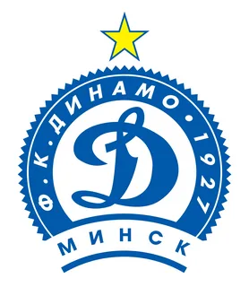
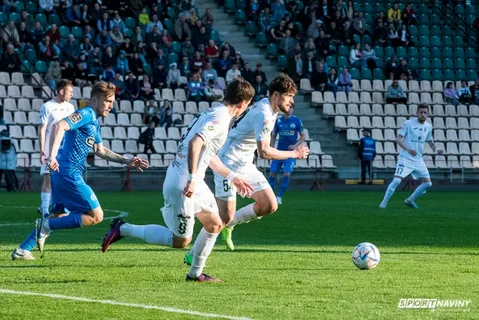
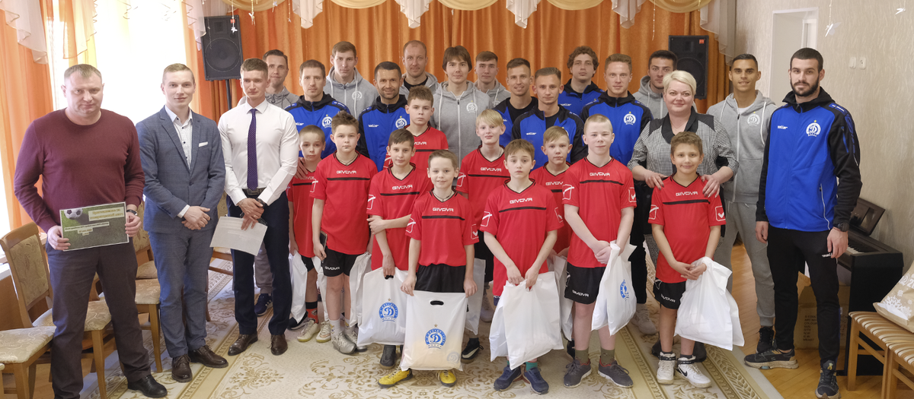

|  | Футбольный клуб Динамо Футбольный клуб «Динамо» — профессиональная команда из Минска, годом рождения которой принято считать 1927 год |
ФК Динамо завоевали кубок Беларуси  |
В упорнейшем противостоянии, на минском стадионе «Динамо» верх взяли футболистки «Динамо-БГУФК». Игра проходила с обилием единоборств и встречных атак. Тем не менее, за 90 минут девушкам не удалось изменить стартовые нули на табло. В ходе дополнительного времени футбольный клуб «Минск» продолжил борьбу за девятую победу в турнире, однако с игры забить не удалось ни одной из команд. В итоге игра плавно перешла в серию пенальти, которая оказалась полной драмматизма. Несмотря на два великолепных сейва Натальи Воскобович, победу все же вырвали футболистки «Динамо-БГУФК», а решающий удар провела Карина Ольховик. Победа в Кубке Беларуси среди женских команд сезона 2020 0:0 (5:4 по пенальти) ) позволила бело-голубым завоевать свой первый трофей. |
|---|---|
Футболисты минского "Динамо" совместно с главным тренером и генеральным директором посетили детский дом №5 г. Минска  |
⚡️Спортсмены провели для детей урок физкультуры, поиграли в футбол, а также пообщались с воспитанниками дома. Затем для футболистов была организована экскурсия: ребята показали игрокам свои условия проживания, рассказали о быте и увлечениях. |